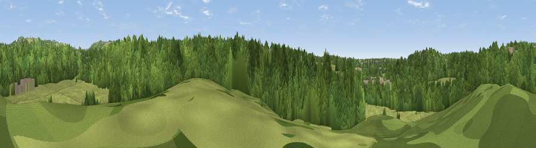

Turncliff Wood
#44727 in England · top 98% of its area beats it · near MarpleThe view, rendered

A 360° render of this exact spot computed from the terrain model, tree cover and land cover — summer colours, afternoon light, calibrated against photographs of famous viewpoints. Real trees, hedges and buildings will differ in detail.
The panorama
Grey silhouette: terrain skyline in each direction (720 bearings, Earth curvature and refraction included). Dashed green: skyline with trees (+15 m) and buildings (+8 m) as obstacles. Blue strip: how far the ground is visible on each bearing.
Where the view opens
Wedge length = distance to the farthest visible ground on that bearing (vegetation-aware). Rings at 10, 25 and 50 km.
What fills the view
57% woodland · 40% grassland · 4% built-up
Angular shares of the visible panorama (visual magnitude), not map area. Landscape diversity 0.35 (0–1 Shannon).
Key numbers
More beautiful places nearby
The staircase of upgrades: each row has a higher view potential than everything closer. Driving times are estimates from straight-line distance, calibrated against real road routing — check an actual route before setting out.
| Place | Direction | Drive | Score |
|---|---|---|---|
| Viewpoint near Marple | WNW · 1 km | ~3 min | 38.6 |
| Viewpoint near Haughton Green | NNW · 2 km | ~5 min | 57.1 |
| Viewpoint near Haughton Green | N · 2 km | ~5 min | 64.0 |
| Viewpoint near Compstall | NNE · 2 km | ~6 min | 72.5 |
| Harrop Edge | NNE · 8 km | ~16 min | 74.6 |
| Wild Bank | NNE · 9 km | ~18 min | 76.2 |
| Viewpoint near Carrbrook | NNE · 11 km | ~21 min | 77.1 |
| Viewpoint near Edenfield | NNW · 32 km | ~49 min | 77.5 |
53.40387, -2.08532 · source: dobih hill · position refined by local search. Computed location — check access rights before visiting.